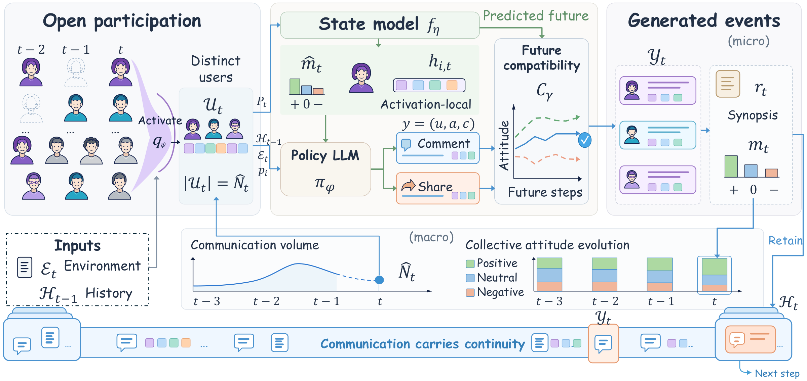
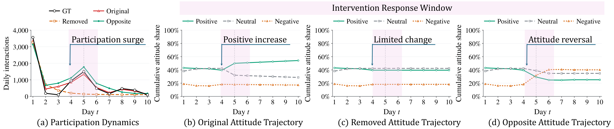
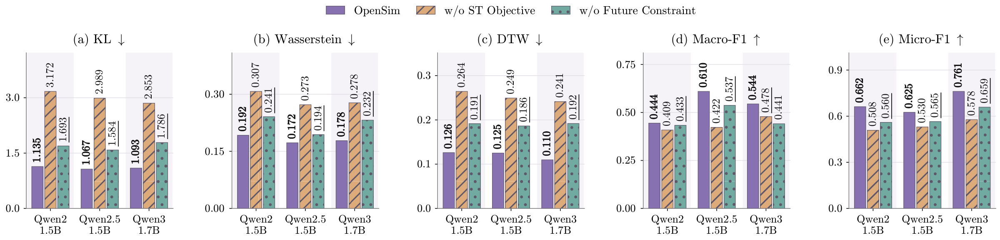

OpenSim
Open populations · Observable communication
Rethinking Social Simulation in Open-Population Systems: From Persistent Agents to Communication Processes
Who participates, what they communicate, and how communication shapes the social process.
1 Huazhong University of Science and Technology, Wuhan, China
2 National University of Singapore, Singapore
* Equal contribution.
† Corresponding author: skyesong@hust.edu.cn
OpenSim project video

01 / Research context
Abstract
Large language models (LLMs) have enabled social simulation with persistent agents, where fixed computational individuals maintain internal states and interact over time.
However, large-scale social networks are inherently open-population: the participating population changes over time, users enter and leave dynamically, and only a sparse subset becomes observable through communication at any given time. In such systems, persistent account identities do not provide continuously observable individual-state trajectories, making recursively maintained psychological states insufficiently grounded in empirical observations.
We therefore shift the simulation target from persistent individual trajectories to the observable evolution of social communication, modeling who participates, what they communicate, and how these communications shape subsequent system dynamics. We instantiate this formulation with participant activation from a global user pool, collective state transition, and an LLM policy for communication generation, while explicitly separating environmental inputs from endogenous system evolution.
Across five Qwen backbones, our framework reduces average KL divergence by 71.2% over Direct LLM and 35.0% over MF-LLM, with boundary and counterfactual experiments further validating the proposed modeling boundaries. Our results support communication-centered simulation as a principled formulation for long-horizon open-population social systems.
02 / Contributions
Highlights
A shift in what the simulator carries forward, what it predicts, and where its responsibility ends.
Communication carries continuity
Observable communication history carries the recursive process. Participants realize communicative events without requiring the simulator to recover their unobserved psychological trajectories.
Participation is endogenous
The framework models participation and communication conditional on declared environmental inputs, separating the platform process from external events it is not tasked with inventing.
Learn from future dynamics
Future-constrained learning connects plausible communication with later collective evolution. Generation and selection use available context and model predictions, without the realized future participant sequence.
03 / Inside the framework
Method
- Open-population participation
- Given prior platform history and declared environmental inputs, OpenSim forecasts communication volume and activates participants from a candidate pool. Participation is step-specific: users may enter, leave, and reappear, while history carries continuity. The manuscript distinguishes event-specific and external participant pools.
- Collective state and communication
- A state-transition model predicts attitude composition and activation-local representations. A policy uses these predictions, participant features, and history to generate actions and content. Selected communications update the realized mean field and textual synopsis. Latent representations are not maintained through inactive periods.
- Future-constrained learning
- A response-sensitive critic learns from communication supervision, trajectory discrepancy, and matched versus masked or mismatched responses. During simulation, candidates are ranked against model-predicted future trajectories. Observed future distributions provide training supervision only.
04 / Experimental evidence
Results
Main comparisons, component ablations, and counterfactual interventions reported in the manuscript.
Main experiments
Across five backbones, the event-specific-pool OpenSim row reduces mean KL by 71.2% relative to Direct LLM* and 35.0% relative to MF-LLM*. These percentages compare the means across backbones; they do not describe OpenSim†.
Comparison conditions. * Baselines receive the observed future participant sequence. OpenSim uses an event-specific pool derived from that event’s records; OpenSim† uses an external participant pool. Event context and stepwise counts are held fixed in the pool comparison.
Expand a backbone to inspect all six metrics. ↓ Lower is better; ↑ higher is better. Bold marks the best value within that backbone.
Qwen2-1.5B5 settings · 6 metrics
| Method / setting | KL ↓ | Wass. ↓ | DTW ↓ | Macro-F1 ↑ | Micro-F1 ↑ | NLL ↓ |
|---|---|---|---|---|---|---|
| Direct LLM* | 2.4090 | 0.3336 | 0.3055 | 0.3441 | 0.5686 | 4.6838 |
| Social Retrieval* | 1.6678 | 0.2568 | 0.2063 | 0.3636 | 0.5526 | 5.1355 |
| MF-LLM* | 1.2494 | 0.2246 | 0.1773 | 0.4311 | 0.6295 | 4.6060 |
| OpenSim† | 2.0773 | 0.2905 | 0.2256 | 0.4209 | 0.6199 | 4.1414 |
| OpenSim | 1.1352 | 0.1922 | 0.1261 | 0.4444 | 0.6616 | 4.3377 |
Qwen2.5-1.5B5 settings · 6 metrics
| Method / setting | KL ↓ | Wass. ↓ | DTW ↓ | Macro-F1 ↑ | Micro-F1 ↑ | NLL ↓ |
|---|---|---|---|---|---|---|
| Direct LLM* | 3.3485 | 0.2844 | 0.3384 | 0.3730 | 0.4651 | 6.3707 |
| Social Retrieval* | 2.4112 | 0.2243 | 0.2695 | 0.4569 | 0.5566 | 6.2568 |
| MF-LLM* | 1.4739 | 0.1941 | 0.1396 | 0.5408 | 0.5881 | 5.1429 |
| OpenSim† | 1.5739 | 0.2142 | 0.1934 | 0.5001 | 0.6008 | 4.4138 |
| OpenSim | 1.0667 | 0.1724 | 0.1252 | 0.6097 | 0.6252 | 4.5980 |
Qwen2.5-3B5 settings · 6 metrics
| Method / setting | KL ↓ | Wass. ↓ | DTW ↓ | Macro-F1 ↑ | Micro-F1 ↑ | NLL ↓ |
|---|---|---|---|---|---|---|
| Direct LLM* | 3.8755 | 0.3603 | 0.3771 | 0.3138 | 0.4561 | 13.9996 |
| Social Retrieval* | 1.8466 | 0.2283 | 0.2591 | 0.3817 | 0.5129 | 14.0303 |
| MF-LLM* | 1.5061 | 0.1546 | 0.2311 | 0.4598 | 0.6222 | 4.5446 |
| OpenSim† | 1.5030 | 0.1495 | 0.1824 | 0.4652 | 0.6545 | 4.4980 |
| OpenSim | 1.0048 | 0.1273 | 0.1369 | 0.5058 | 0.7278 | 4.5356 |
Qwen2.5-7B5 settings · 6 metrics
| Method / setting | KL ↓ | Wass. ↓ | DTW ↓ | Macro-F1 ↑ | Micro-F1 ↑ | NLL ↓ |
|---|---|---|---|---|---|---|
| Direct LLM* | 3.0914 | 0.3107 | 0.3097 | 0.3471 | 0.5581 | 13.0946 |
| Social Retrieval* | 2.5142 | 0.2981 | 0.2882 | 0.3701 | 0.5821 | 12.8823 |
| MF-LLM* | 1.6049 | 0.2234 | 0.2564 | 0.4380 | 0.6117 | 4.6823 |
| OpenSim† | 1.4294 | 0.2289 | 0.2509 | 0.4455 | 0.6340 | 4.9849 |
| OpenSim | 0.8509 | 0.1759 | 0.1572 | 0.4855 | 0.6752 | 5.0921 |
Qwen3-1.7B5 settings · 6 metrics
| Method / setting | KL ↓ | Wass. ↓ | DTW ↓ | Macro-F1 ↑ | Micro-F1 ↑ | NLL ↓ |
|---|---|---|---|---|---|---|
| Direct LLM* | 5.1480 | 0.4279 | 0.4191 | 0.3314 | 0.5236 | 25.7470 |
| Social Retrieval* | 4.7743 | 0.3453 | 0.2210 | 0.3478 | 0.5451 | 25.4819 |
| MF-LLM* | 2.0902 | 0.2549 | 0.1715 | 0.5095 | 0.6518 | 6.3621 |
| OpenSim† | 1.3115 | 0.2377 | 0.1583 | 0.4865 | 0.6825 | 4.4081 |
| OpenSim | 1.0929 | 0.1780 | 0.1098 | 0.5445 | 0.7610 | 4.4414 |
All 150 main-result metric values are retained from manuscript Table 1; parenthetical improvement percentages are omitted.

Component ablations
Removing state-transition supervision or the future-constrained policy objective, with participation modeling and the remaining pipeline unchanged.

Expand a backbone for the complete ablation values. Bold marks the best value within that backbone.
Qwen2-1.5B3 settings · 6 metrics
| Method / setting | KL ↓ | Wass. ↓ | DTW ↓ | Macro-F1 ↑ | Micro-F1 ↑ | NLL ↓ |
|---|---|---|---|---|---|---|
| OpenSim | 1.1352 | 0.1922 | 0.1261 | 0.4444 | 0.6616 | 4.3377 |
| w/o ST Objective | 3.1716 | 0.3074 | 0.2644 | 0.4087 | 0.5079 | 4.4791 |
| w/o Future Constraint | 1.6934 | 0.2410 | 0.1914 | 0.4331 | 0.5597 | 4.4315 |
Qwen2.5-1.5B3 settings · 6 metrics
| Method / setting | KL ↓ | Wass. ↓ | DTW ↓ | Macro-F1 ↑ | Micro-F1 ↑ | NLL ↓ |
|---|---|---|---|---|---|---|
| OpenSim | 1.0667 | 0.1724 | 0.1252 | 0.6097 | 0.6252 | 4.5980 |
| w/o ST Objective | 2.9886 | 0.2725 | 0.2494 | 0.4222 | 0.5299 | 4.4942 |
| w/o Future Constraint | 1.5839 | 0.1940 | 0.1864 | 0.5369 | 0.5646 | 4.3211 |
Qwen3-1.7B3 settings · 6 metrics
| Method / setting | KL ↓ | Wass. ↓ | DTW ↓ | Macro-F1 ↑ | Micro-F1 ↑ | NLL ↓ |
|---|---|---|---|---|---|---|
| OpenSim | 1.0929 | 0.1780 | 0.1098 | 0.5445 | 0.7610 | 4.4414 |
| w/o ST Objective | 2.8526 | 0.2775 | 0.2412 | 0.4782 | 0.5776 | 4.5111 |
| w/o Future Constraint | 1.7857 | 0.2320 | 0.1919 | 0.4413 | 0.6587 | 4.0974 |
All 54 metric values are retained from the manuscript’s component-ablation table. w/o ST Objective removes state-transition supervision; w/o Future Constraint removes the future-constrained policy objective.
Results are reported from the manuscript. See the released dataset and evaluation disclosure for record provenance and the reference-text matching protocol.
05 / Work with OpenSim
Usage
The release requires Python 3.11+, CUDA, and Git LFS. Its default backbone is Qwen/Qwen3-1.7B; model weights are not included.
git lfs install
git clone https://github.com/AI4SS/OpenSim.git
cd OpenSim
git lfs pull
python -m venv .venv
source .venv/bin/activate
python -m pip install -e .
python scripts/run.py --dry-runTraining, simulation, and evaluation use the same workflow configuration. Simulation requires trained checkpoints and a passed validation gate.
python scripts/train.py --base-model Qwen/Qwen3-1.7B --output-dir outputs
python scripts/simulate.py --base-model Qwen/Qwen3-1.7B --output-dir outputs --resumeThe released data mix original-source-derived, generated or rewritten, and unresolved-provenance records. Its micro-level evaluator samples reference records with replacement from an event-level pool; those metrics measure consistency with sampled reference texts. This differs from the manuscript’s participant-sampling protocol. See the dataset and evaluation disclosure and README for the full setup, checkpoint requirements, and evaluation instructions.
Reference
Citation
If this work is useful to your research, please cite the manuscript.
@misc{zhang2026opensim,
title = {Rethinking Social Simulation in Open-Population Systems: From Persistent Agents to Communication Processes},
author = {Yunyao Zhang and Yihao Ai and Boqi Xu and Zuocheng Ying and Junqing Yu and Zikai Song},
year = {2026},
url = {https://ai4ss.github.io/OpenSim/}
}